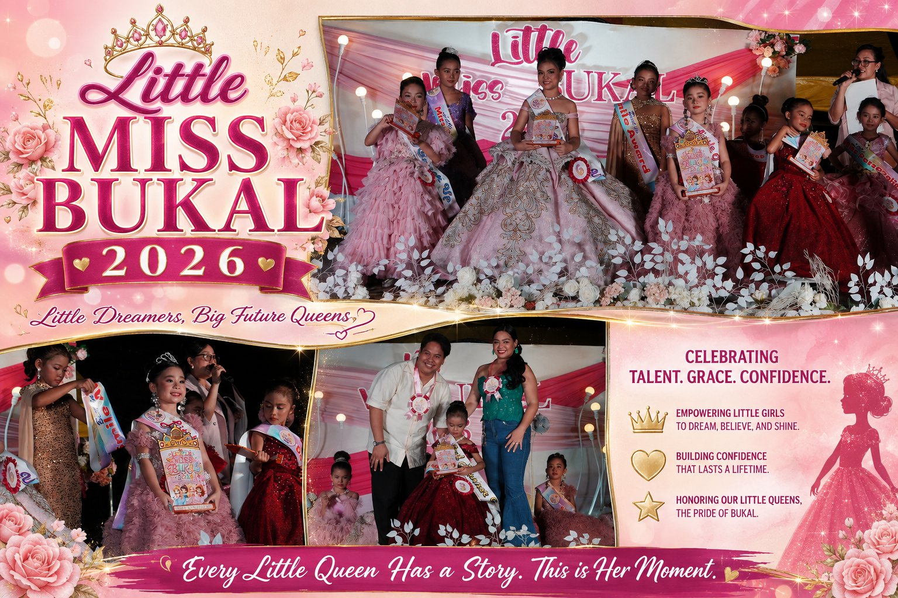
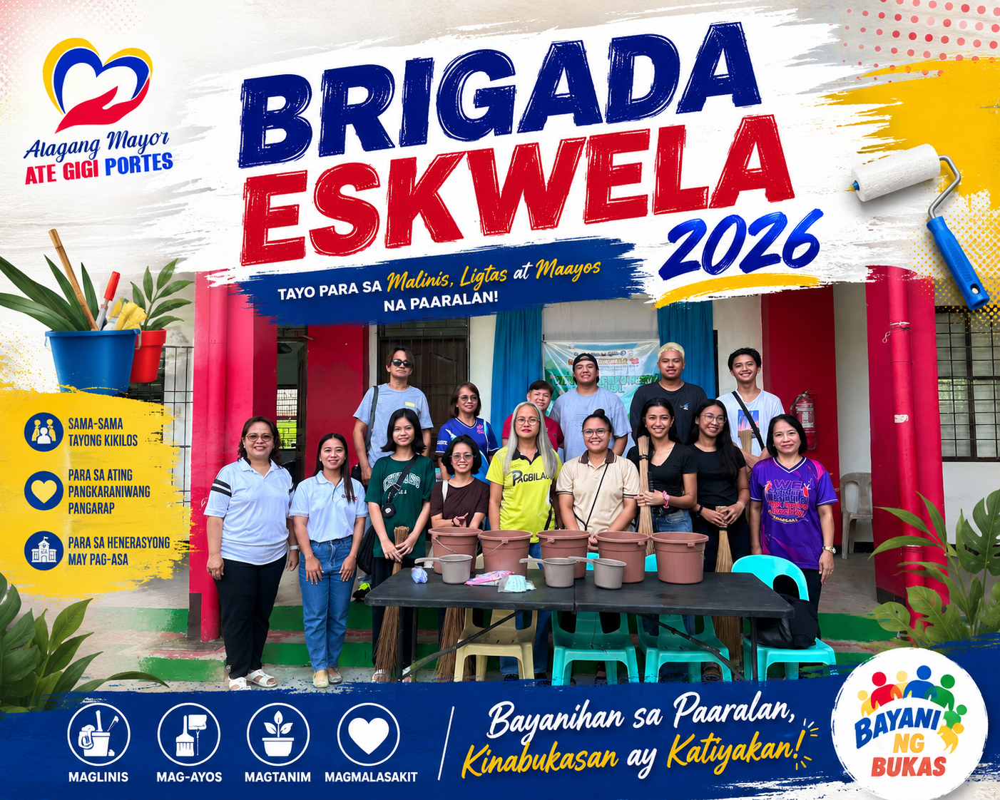
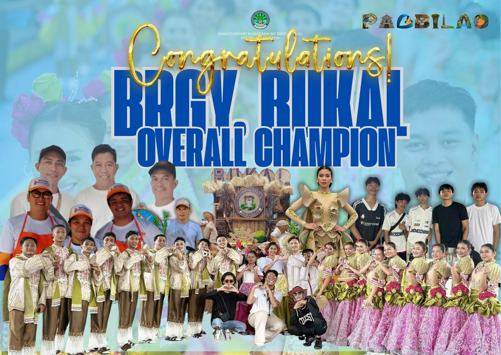
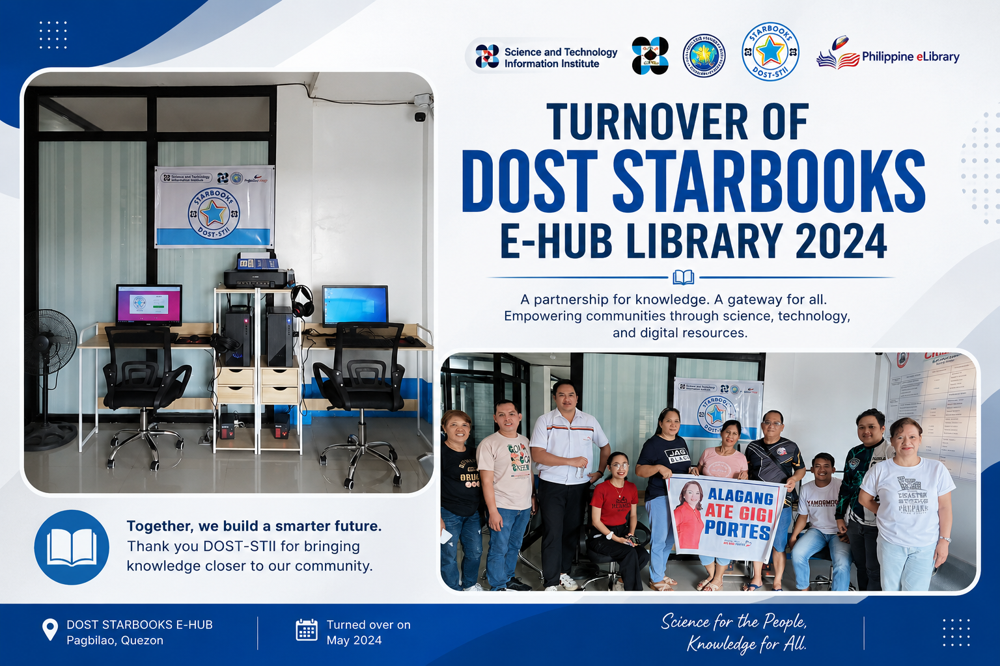
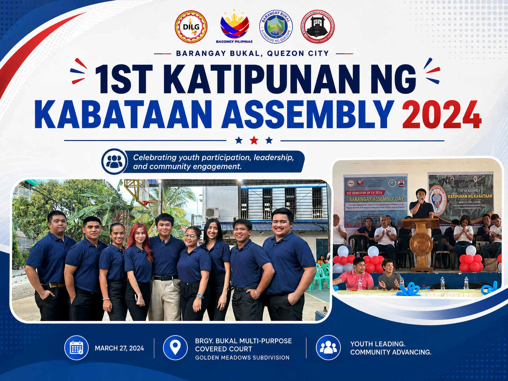
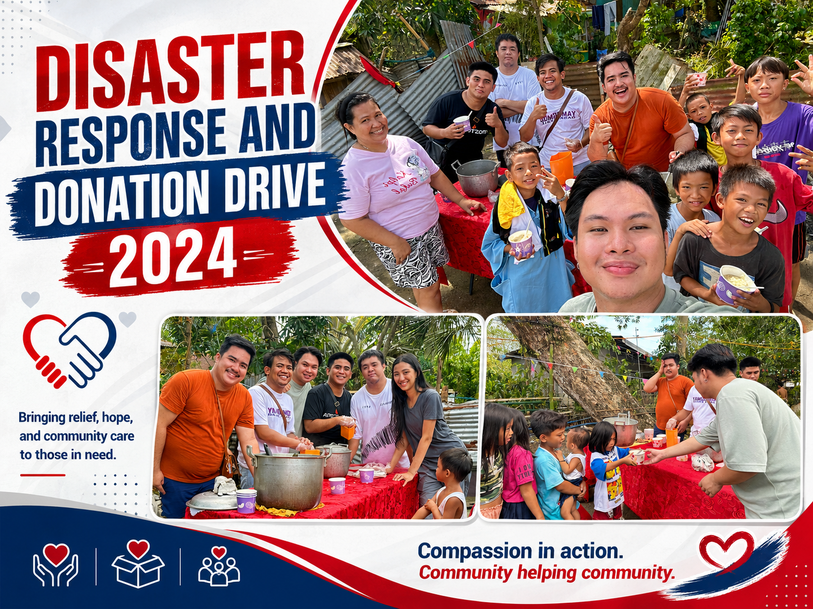
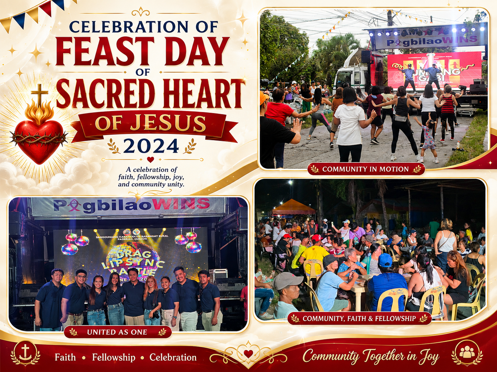
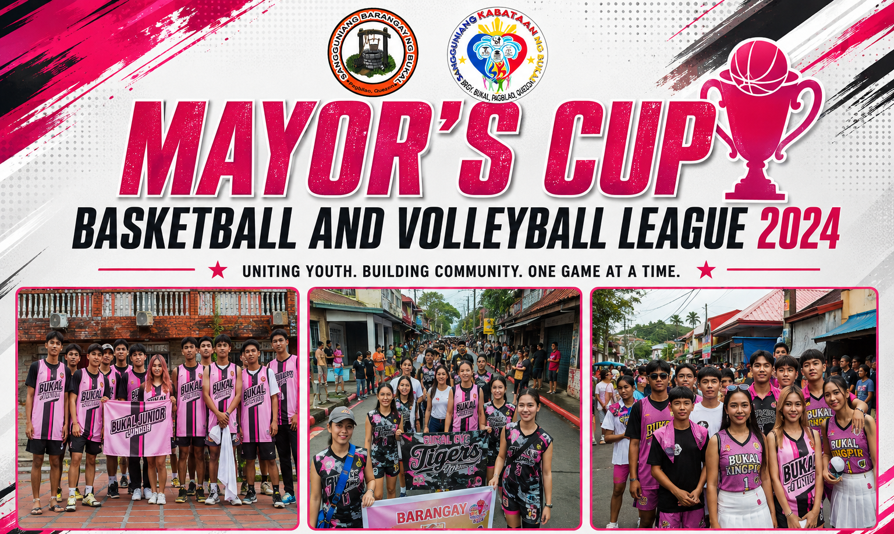
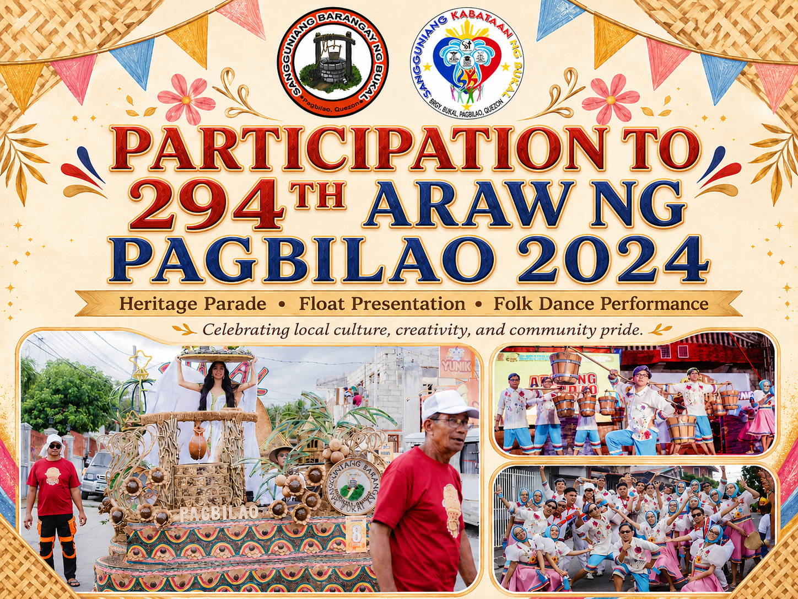

Event • 2026
Little Miss Bukal 2026
A community youth event featuring young participants from Barangay Bukal and promoting confidence, participation, and community engagement.
Explore the programs, projects, activities, achievements, and community initiatives of the Sangguniang Kabataan ng Barangay Bukal.

A community youth event featuring young participants from Barangay Bukal and promoting confidence, participation, and community engagement.

Participation of the Sangguniang Kabataan in community efforts supporting the preparation and improvement of local schools.

Barangay Bukal achieved the distinction of Overall Champion during the celebration of Araw ng Pagbilao 2025.

Participation in youth-centered programs and activities organized as part of the municipality's Linggo ng Kabataan celebration.
A community sports program promoting youth participation, teamwork, sportsmanship, and healthy recreation.

Turnover of the DOST STARBOOKS E-Hub Library, supporting access to digital learning and educational resources for the community.

The first Katipunan ng Kabataan Assembly, providing a venue for youth participation, consultation, and discussion of community programs and plans.

Community support and donation activities conducted to assist residents affected by emergencies and disasters.

Participation in the community celebration honoring the Feast Day of the Sacred Heart of Jesus.

Youth participation in municipal basketball and volleyball competitions.

Community participation in school preparation and improvement activities.

Participation of Barangay Bukal youth in the 294th celebration of Araw ng Pagbilao.

Barangay sports activity promoting youth recreation, teamwork, and sportsmanship.

Participation in a seminar and training focused on awareness and understanding of the country's pillars of justice.

A celebration centered on youth participation, talent, recreation, and community engagement.

A youth-oriented educational support activity held during the Christmas season.

Barangay Bukal achieved Champion recognition in the Linggo ng Kabataan Dance Competition.

Groundbreaking activity for the proposed SK Building and Day Care Center in Barangay Bukal.

Public consultation regarding the proposed educational financial assistance program for qualified youth beneficiaries.